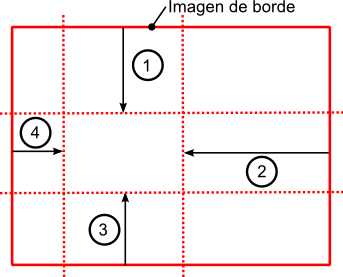

border-radius
Indica que el tamaño del borde redondeado. Es importante definir un border-style para que el borde
se vea
redondeado.
Admite de uno a cuatro valores, que son los siguientes:
Un valor: se aplica a los cuatros lados.
Dos valores. se aplica el primero a arriba y abajo y el segundo a derecha e
izquierda.
Tres valores: se aplica el primero a arriba,el segundo a derecha e izquierda y el
tercero a abajo.
Cuatro valores: se aplica el primero a arriba, el segundo a la derecha, el tercero abajo y el cuarto
a la izquierda.
Su sintaxis es : border-radius: 15px 10px 15px 10px ;
border-radius: 15px 10px 15px 10px;
border-style: solid;
border-width: 2px;
border-color: black;
border-top-right-radius
Indica que el borde superior sea redondeado. Es importante definir un border-style para que el borde
se vea redondeado.
Su sintaxis es border-top-right-radius: 30px.
border-top-right-radius: 30px
border-style: solid;
border-width: 2px;
border-color: black;
border-top-left-radius
Indica que el borde superior izquierdo sea redondeado. Es importante definir un border-style para
que el borde se vea redondeado.
Su sintaxis es border-top-left-radius: 30px;
border-top-right-radius: 30px;
border-style: solid;
border-width: 2px;
border-color: black;
border-bottom-right-radius
Indica que el borde inferior derecho sea redondeado. Es importante definir un border-style para que
el borde se vea redondeado.
Su sintaxis es border-bottom-right-radius: 30px;
border-bottom-right-radius: 30px;
border-style: solid;
border-width: 2px;
border-color: black;
border-bottom-left-radius
Indica que el borde inferior izquierdo sea redondeado.Es importante definir un border-style para que
el borde se vea redondeado.
Su sintaxis es border-bottom-left-radius: 30px;
border-bottom-left-radius: 30px;
border-style: solid;
border-width: 2px;
border-color: black;
border-image-source
Establece una imagen como borde. El elemento debe tener definido un borde y un ancho para poder
mostrarse. Si no encuentra la imagen, mostrará el borde indicado.
Si solo se utiliza esta propiedad, la imagen se mostrará repetida en las cuatro esquinas.
Su sintaxis es border-image-source: url('imagen.jpg);
border-image-source: url('../img/hormigas.jpg');
border-width: 70px;
border-image-width
Establece el ancho de la imagen utilizada como borde.
Admite de uno a cuatro valores, que son los siguientes:
Un valor: se aplica a los cuatros lados.
Dos valores. se aplica el primero a arriba y abajo y el segundo a derecha e
izquierda.
Tres valores: se aplica el primero a arriba,el segundo a derecha e izquierda y el
tercero a abajo.
Cuatro valores: se aplica el primero a arriba, el segundo a la derecha, el tercero abajo y el cuarto
a la izquierda.
auto: toma el valor definido en border-image-slice
Su sintaxis es : border-image-width: 50px 30px 50px 30px;
border-image-source: url('../img/hormigas.jpg');
border-image-width: 50px 30px 50px 30px;
border-image-slice
Permite trocear la imagen que vamos a utilizar como borde. La imagen se divide en nueve partes y se
troceará en función de los valores dados.
Admite de uno a cuatro valores, que pueden ser porcentajes o numéricos, en este caso. se
interpretarán como píxeles en imágenes de mapa de bits o como coordenadas en imágenes vectoriales.

Estos valores indican el trozo de imagen que se recortará.
Admite de uno a cuatro valores, que son los siguientes:
Un valor: se aplica a los cuatros lados.
Dos valores. se aplica el primero a arriba y abajo y el segundo a derecha e
izquierda.
Tres valores: se aplica el primero a arriba,el segundo a derecha e izquierda y el
tercero a abajo.
Cuatro valores: se aplica el primero a arriba, el segundo a la derecha, el tercero abajo y el cuarto
a la izquierda.
Su sintaxis es : border-image-slice: 70 15 30 40;
border-image-source: url('../img/hormigas.jpg');
border-image-repeat: round;
border-image-slice: 70;
border-image-width: 30px;
border-image-source: url('../img/hormigas.jpg');
border-image-repeat: round;
border-image-slice: 70 25;
border-image-width: 30px;
border-image-source: url('../img/hormigas.jpg');
border-image-repeat: round;
border-image-slice: 70 10 60;
border-image-width: 30px;
border-image-source: url('../img/hormigas.jpg');
border-image-repeat: round;
border-image-slice: 70 15 30 40;
border-image-width: 30px;
border-image-repeat
Establece la forma en la que la imagen se repite a lo largo del borde.
Puede tener cuatro valores:
stretch: la imagen se estire o encoge para ocupar el espacio necesario del borde.
repeat: la imagen se repite para ocupar todo el espacio del borde.
round: la imagen se repite hasta cubrir el espacio del borde, si no se ajusta tras repetirse un
número íntegro de veces, la imagen se escala para ajustarse.
space: la imagen es distribuida en mosaico.
Su sintaxis es : border-image-repeat: repeat/strech/space/round;
border-image: url('../img/hormigas.jpg');
border-image-slice: 70;
border-image-width: 20px;
border-image-repeat: repeat;
border-image: url('../img/hormigas.jpg');
border-image-slice: 70;
border-image-width: 20px;
border-image-repeat: strech;
border-image: url('../img/hormigas.jpg');
border-image-slice: 70;
border-image-width: 20px;
border-image-repeat: round;
border-image: url('../img/hormigas.jpg');
border-image-slice: 70;
border-image-width: 20px;
border-image-repeat: space;
border-image
Indica que el borde será una imagen.
Esta propiedad se utiliza para agrupar las propiedades border-image-source, border-image-slice,
border-image-width, border-image-outset y border-image-repeat
en una sola propiedad. Se debe separa mediante barras las propiedades border-slice, border-width y
border-image-outset.
Su sintaxis es: border-image: url('../img/hormigas.jpg') 70 / 20px / 1 round;
border-image: url('../img/hormigas.jpg') 70 / 20px / 1 round;
border-image-outset
Permite extender la imagen de borde más allá del elemento que lo contiene.
Se puede indicar mediante una unidad de longitud como px o cm o mediante un número que se
multiplicará por el ancho del borde. Por ejemplo, con un ancho de borde de 5px, 2 representaría 2 *
5px.
Admite de uno a cuatro valores, que son los siguientes:
Un valor: se aplica a los cuatros lados.
Dos valores. se aplica el primero a arriba y abajo y el segundo a derecha e
izquierda.
Tres valores: se aplica el primero a arriba,el segundo a derecha e izquierda y el
tercero a abajo.
Cuatro valores: se aplica el primero a arriba, el segundo a la derecha, el tercero abajo y el cuarto
a la izquierda.
Su sintaxis es : border-image-outset: 20px 40px 2
0px 60px;
border-image: url('../img/hormigas.jpg');
border-image-slice: 70;
border-image-width: 20px;
border-image-repeat: round;
border-image-outset: 20px;
margin-bottom: 60px;
border-image: url('../img/hormigas.jpg');
border-image-slice: 70;
border-image-width: 20px;
border-image-repeat: round;
border-image-outset: 20px 40px;
margin-bottom: 60px;
border-image: url('../img/hormigas.jpg');
border-image-slice: 70;
border-image-width: 20px;
border-image-repeat: round;
border-image-outset: 20px 40px 3>0px;
border-image: url('../img/hormigas.jpg');
border-image-slice: 70;
border-image-width: 20px;
border-image-repeat: round;
border-image-outset: 20px 40px 20px 60px;
margin-bottom: 60px;
box-shadow
Proyecta una sombra difuminada en la estructura de casi cualquier elemento. Si se hace sobre un
border-radius, esta sombra se aplica a las esquinas redondeadas
Admite de 2 a 5 valores, siendo obligatorio el lugar donde se coloca la sombra
Sus valores son:
offset-x: Distancia desde eje x indicada en píxeles. Si se indica un número ne gativo, se coloca
hacia arriba
offset-y: Distancia desde eje y indicada en píxeles. Si se indica un número negativo, se coloca
hacia la izquierda
blur-radius: Difuminado de la sombra.
spread-radius: Expasión de la sombra.
color: Color de la sombra.
Su sintaxis es : box-shadow: -5px -5px 3px 3px gray;
box-shadow: 5px 5px 3px 3px gray;
box-shadow: -5px -5px 3px 3px gray;